외대앞역까지 1분.
사진으로 보면 믿으실까요?
답은 "101·102동이라면
진짜예요"예요.
단지 옆 철길을
따라 난 통로로 나가면
바로 외대앞역 승강장이 보이거든요.
길 건너 래미안라그란데에
사는 사람으로서
옆 단지 이문아이파크자이를
직접 걸어봤어요.
분양 광고 말고,
커뮤니티 안내판과
현장 동선을 근거로
팩트로 한번 따져보겠습니다.
안녕하세요. 착한언니복덕방 신촌자이엘라&마포그랑자이 (착한언니) 부동산입니다.
2014년 겨울부터 신촌 한 자리, 12년째 마포·서대문만 보고 있어요.
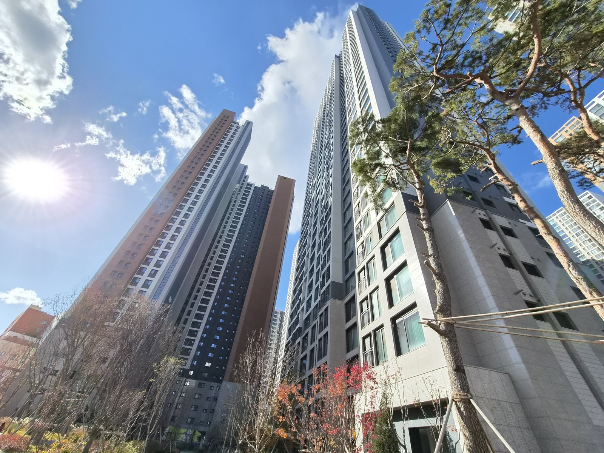
▲ 이문아이파크자이 — 40층 안팎 타워형 동이
빽빽해요 (직접 촬영 2026.11)
| 1. 어떤 단지예요? |
| 항목 | 내용 |
| 위치 | 동대문구 이문동 (이문3재정비촉진구역) |
| 규모 | 최고 41층 · 전체 4,321세대 (3-1BL 4,169세대) |
| 동 수 | 1단지 10개 동 · 2단지 9개 동 (3단지 별도) |
| 사용승인 | 2025년 11월 27일 (3-1BL) |
| 용적률 · 건폐율 | 357% · 26% |
| 주차 | 5,531대 (세대당 약 1.28대) |
| 난방 | 개별난방 (도시가스) |
| 시공 | HDC현대산업개발 · GS건설 |
| 역 | 1호선 외대앞역 · 신이문역 |
단지 정보 사이트(호갱노노·당근부동산 등)
공통 표기 기준
동 수는 자료마다 차이
정비몽땅 단계 '부분준공인가'
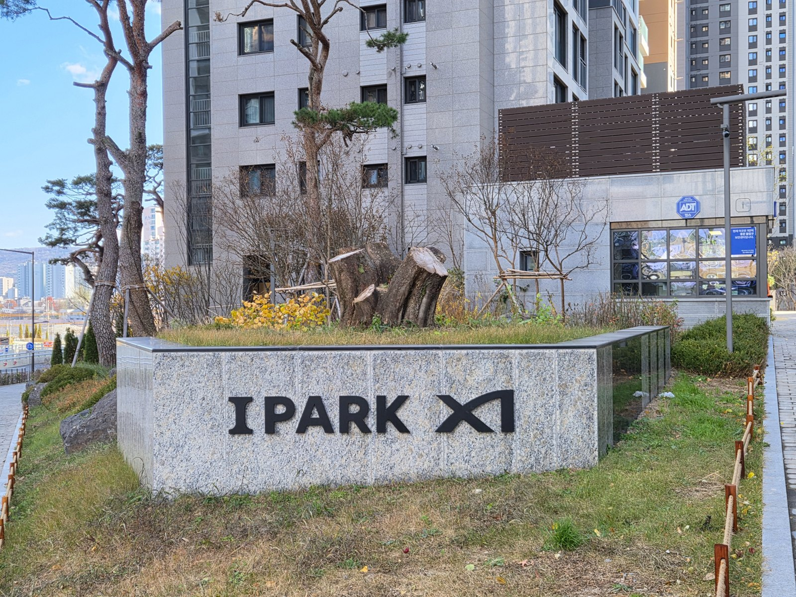
▲ 단지 입구 IPARK
X1 사인 (직접 촬영)
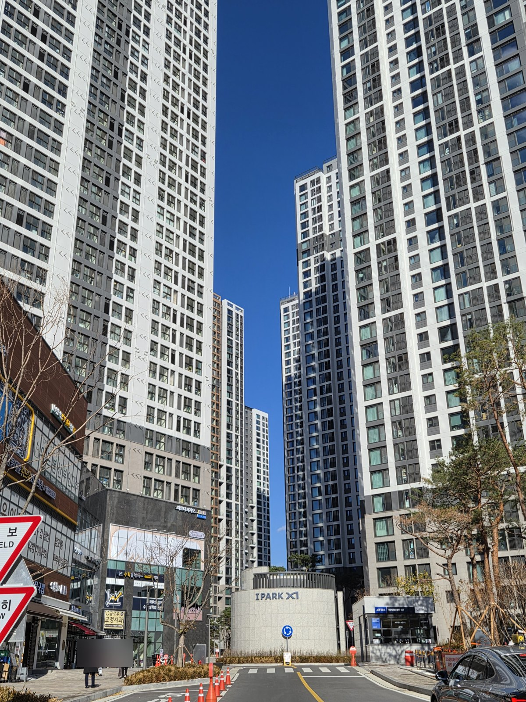
▲ 차량 진입로 — 왼쪽은 단지 상가,
병원이 꽉 차 있어요 (직접 촬영)
| 2. 외대앞역 1분 — 이 통로예요 |
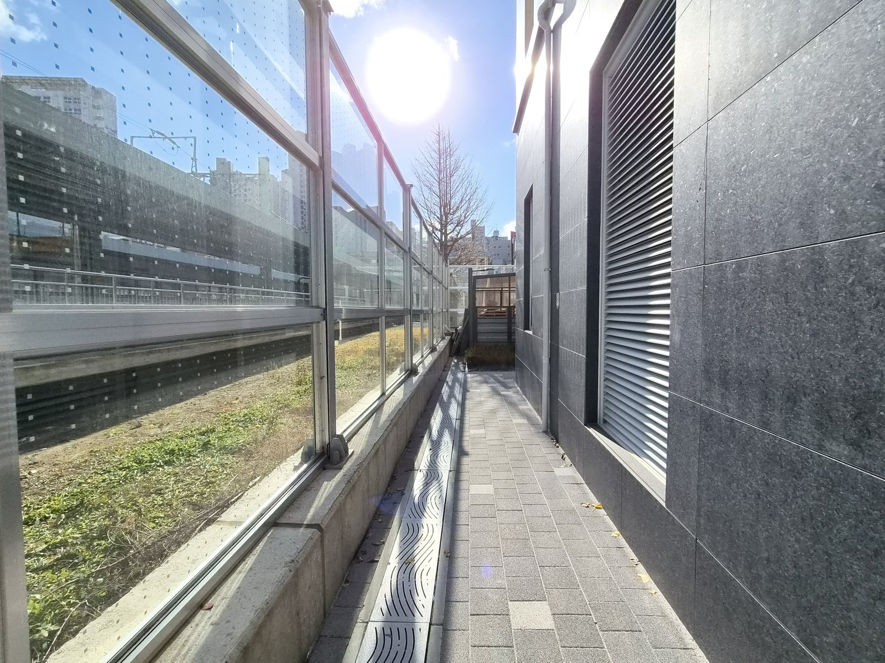
▲ 철길 옆 방음벽 통로 —
101·102동에서 외대앞역으로
이어져요 (직접 촬영)
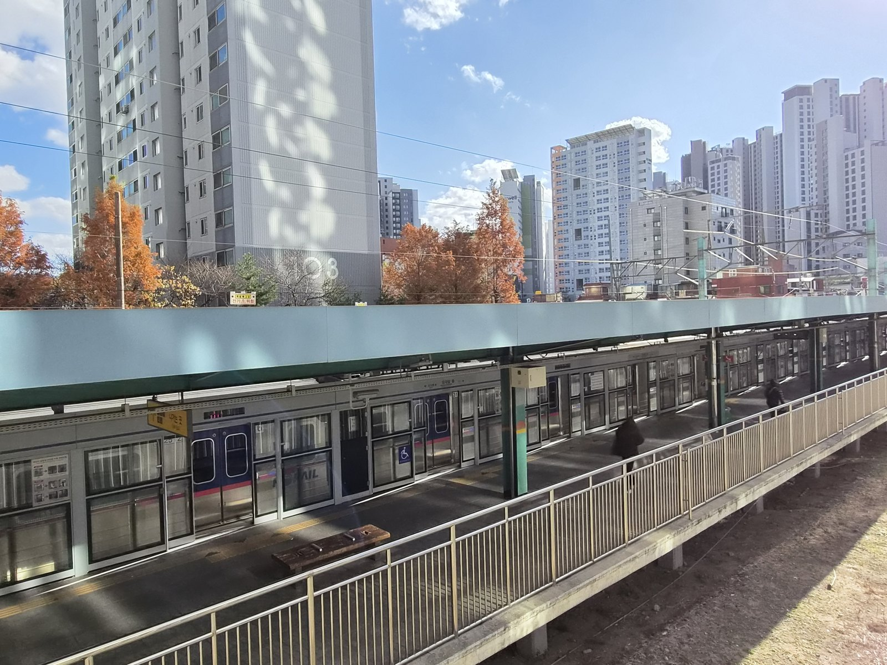
▲ 통로에서 내려다보이는
외대앞역 승강장 (직접 촬영)
| 동 | 가까운 역 | 걸어서 |
| 101·102동 | 1호선 외대앞역 | 1분 (철길 옆 통로) |
| 204·205동 | 1호선 신이문역 | 5분 |
착한언니가 직접 걸어본 기준
다른 동은 위치에 따라 달라요
✔ 단지가 크다 보니
동마다 가까운 역이 달라요.
역세권이라는 말만 듣지 말고
동 번호부터 확인하세요
✔ 이 통로는 지금은
누구나 다녀요.
입주민 전용 출입문을
11월 말까지 만드는 중이라,
앞으로 통로 이용 방식이
바뀔 수 있어요
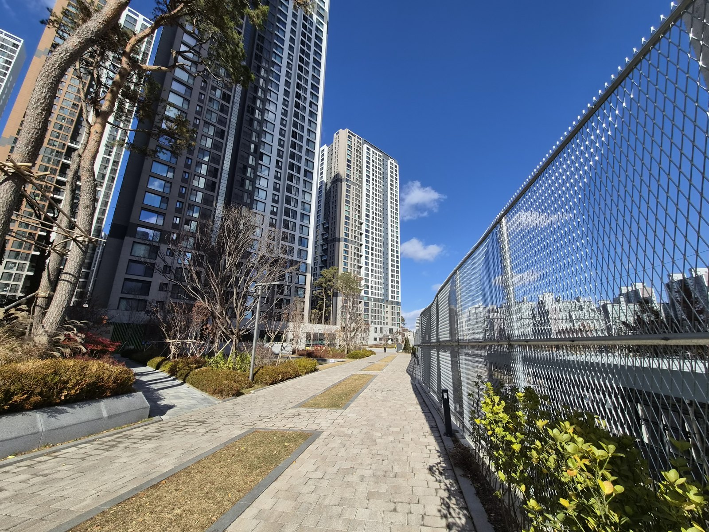
▲ 철길을 따라 이어지는
단지 산책로 (직접 촬영)
대신 철길 바로
옆이라는 뜻이기도 해요
직접 걸어보니 철도
소음은 확실히 있어요.
방음벽이 있어도
철로 쪽 동·저층은 열차 소리를
꼭 직접 들어보세요.
| 3. 커뮤니티, 이용료까지 정리했어요 |
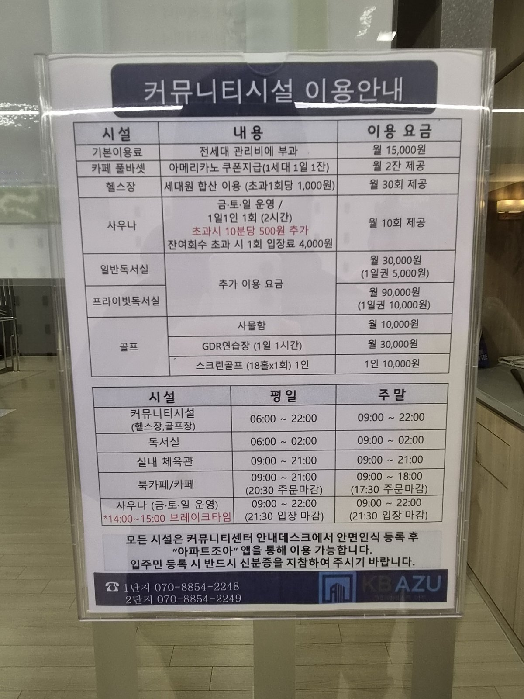
▲ 커뮤니티시설 이용안내 게시물
(직접 촬영 2026.11)
| 시설 | 이용 방식 | 요금 |
| 기본이용료 | 전 세대 관리비에 부과 | 월 15,000원 |
| 카페(폴바셋) | 아메리카노 쿠폰 (1세대 1일 1잔) | 월 2잔 제공 |
| 헬스장 | 세대원 합산, 초과 1회 1,000원 | 월 30회 제공 |
| 사우나 | 금·토·일 운영 · 1일 1인 1회(2시간) | 월 10회 · 초과 1회 4,000원 |
| 일반 독서실 | 추가 요금 | 월 30,000원 (1일 5,000원) |
| 프라이빗 독서실 | 추가 요금 | 월 90,000원 (1일 10,000원) |
| 골프 | GDR 연습장 1일 1시간 · 스크린골프 18홀 | 월 30,000원 · 1인 10,000원 |
단지 게시물(2026.11) 기준
운영 방식은 입주자대표회의
결정에 따라 바뀔 수 있어요
| 시설 | 평일 | 주말 |
| 헬스장·골프장 | 06:00 ~ 22:00 | 09:00 ~ 22:00 |
| 독서실 | 06:00 ~ 02:00 | 09:00 ~ 02:00 |
| 실내 체육관 | 09:00 ~ 21:00 | 09:00 ~ 21:00 |
| 카페 | 09:00 ~ 21:00 | 09:00 ~ 18:00 |
| 사우나 (금·토·일) | 09:00 ~ 22:00 | 09:00 ~ 22:00 |
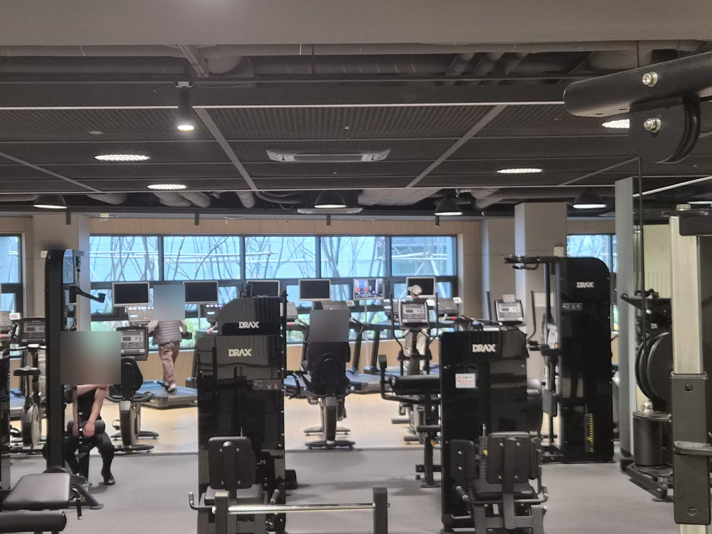
▲ 피트니스 — 창밖으로
조경이 보여요 (직접 촬영
이용자 얼굴 가림)
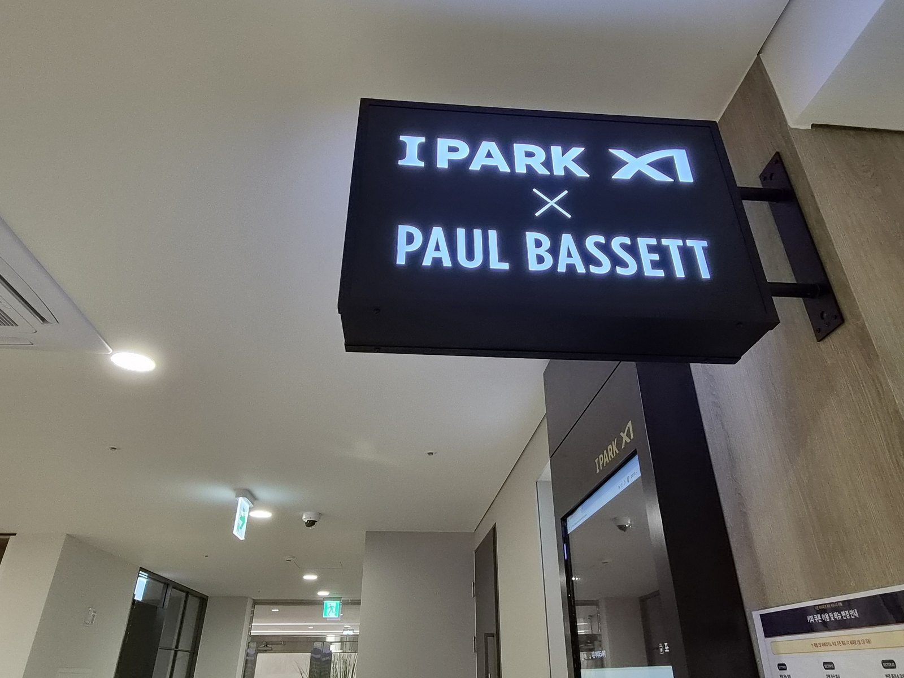
▲ 단지 안 카페 IPARK X1 ×
PAUL BASSETT (직접 촬영)
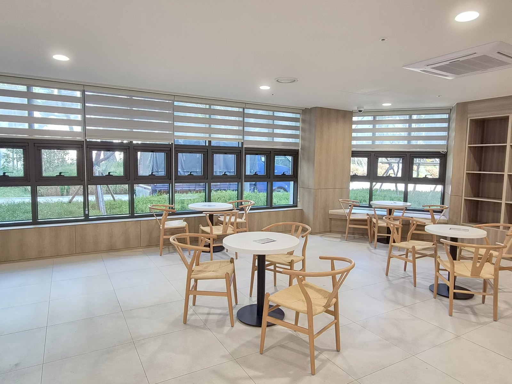
▲ 카페 좌석 (직접 촬영)
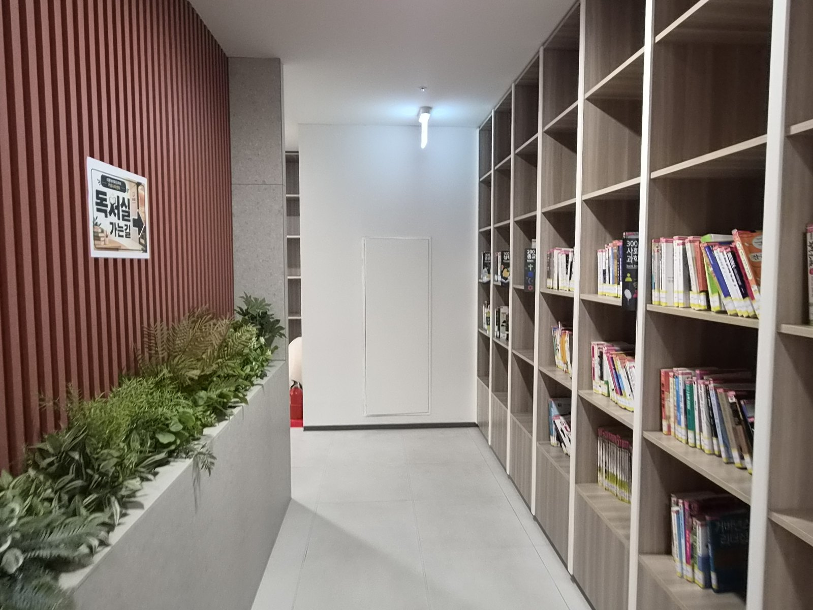
▲ 독서실 가는 길 (직접 촬영)
✔ 모든 시설은
안면인식 등록 후 앱으로
이용해요
(입주민 등록 때 신분증 필요)
| 4. 단지 안을 걸어보면 |
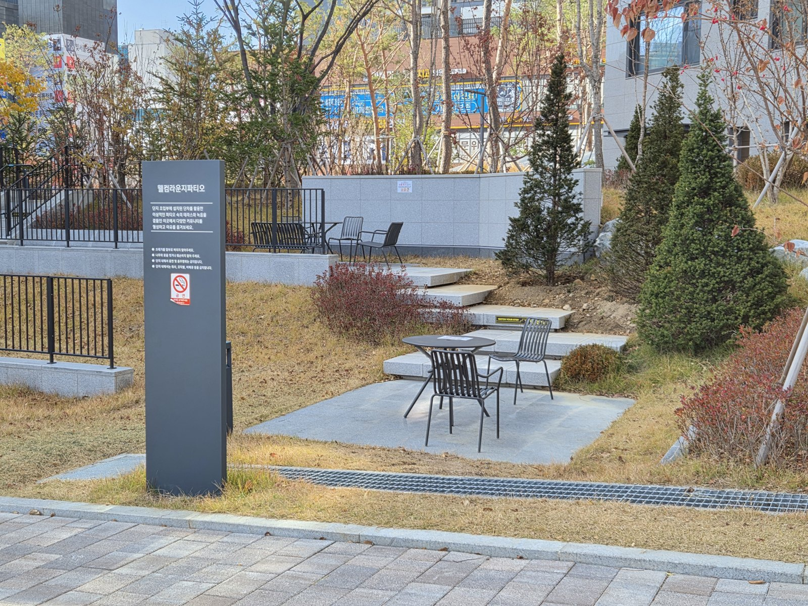
▲ 웰컴라운지 파티오 —
단차를 살린 야외 테라스 (직접 촬영)
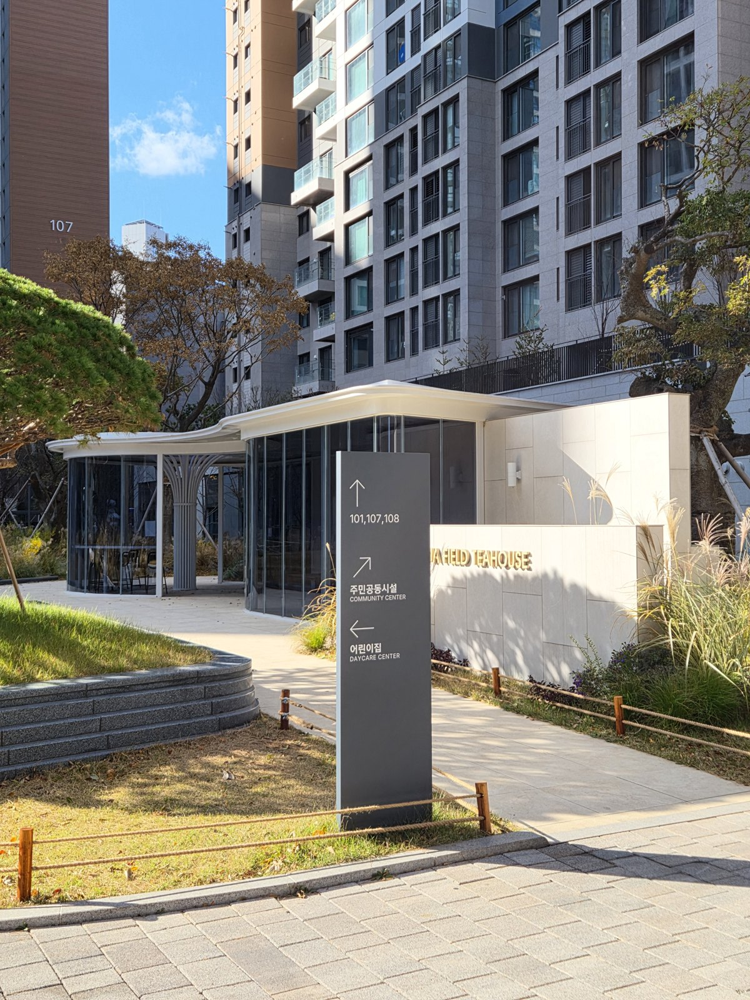
▲ 티하우스와
주민공동시설·어린이집 안내 (직접 촬영)
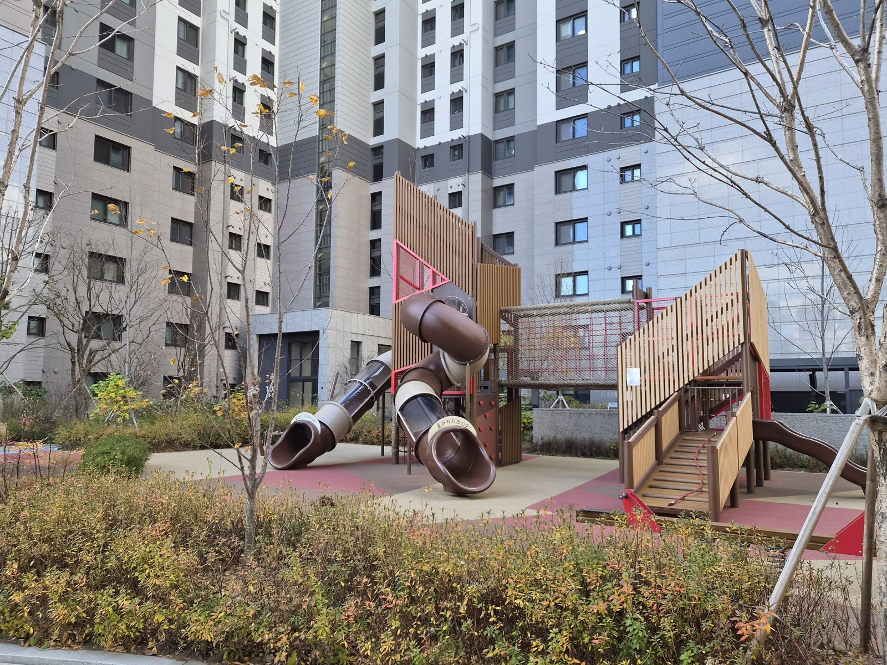
▲ 놀이터 (직접 촬영)
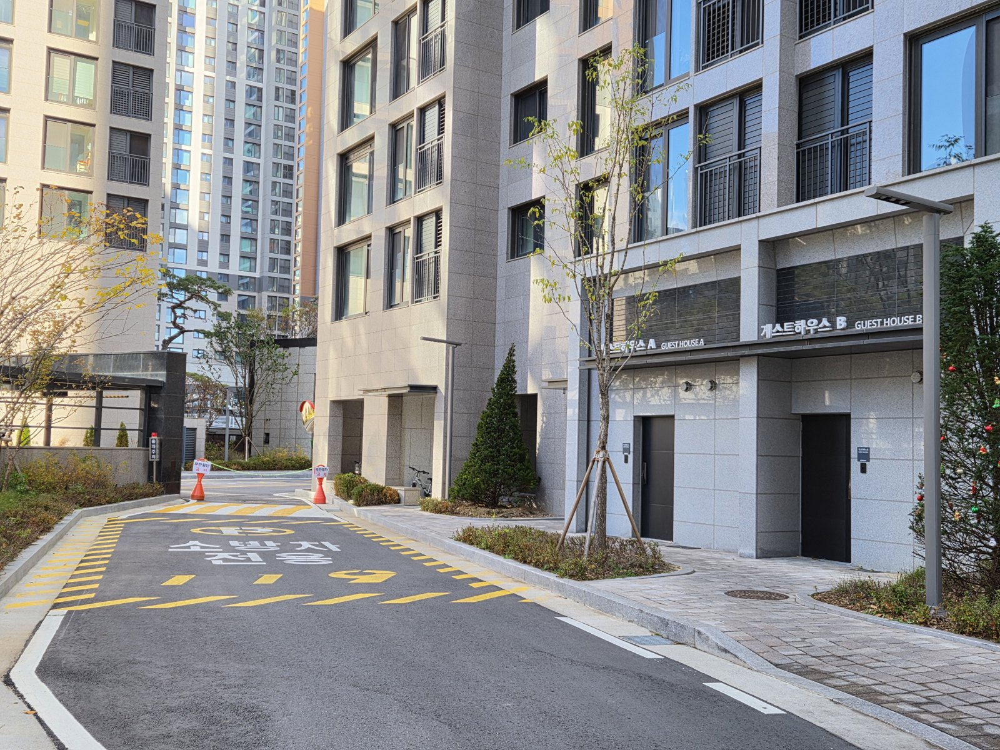
▲ 게스트하우스 A·B —
손님 오실 때 좋아요 (직접 촬영)
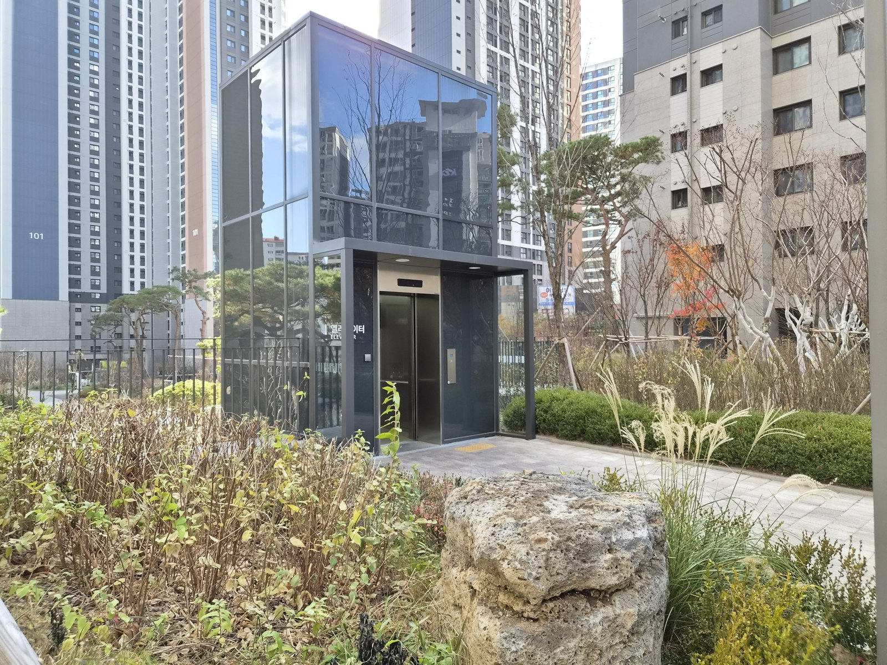
▲ 단지 안 엘리베이터 —
높낮이 차이를 이어줘요 (직접 촬영)
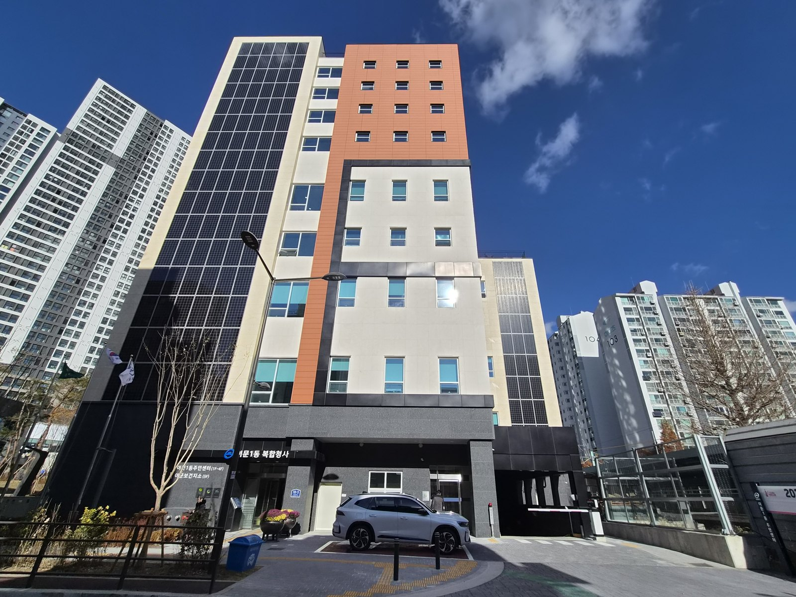
▲ 단지 바로 옆 이문1동
복합청사 (주민센터·보건지소)
상가가 정말 잘 돼 있어요
단지 앞 상가에
병원·학원이 꽉 차 있고,
맛집도 라그란데 쪽보다 많아요.
단지 안에 오피스텔동도
따로 있어요.
| 5. 라그란데랑 비교하면 |
| 이문아이파크자이 | 래미안라그란데 | |
| 역 | 101·102동 외대앞역 1분 · 204·205동 신이문역 5분 | 동에 따라 외대앞·신이문역 걸어서 10~15분 |
| 커뮤니티 기본요금 | 월 15,000원 (전 세대 관리비) | 없음 |
| 카페 | 폴바셋 카페 운영 중 (쿠폰 월 2잔) | 아직 운영 전 (조식 투표 중) |
| 사우나 | 금·토·일 · 월 10회 | 금·토·일 · 입주민 전용 |
| 상가 | 병원·맛집 많음 · 오피스텔동 있음 | 상대적으로 적은 편 |
| 철도 소음 | 철로 쪽 동은 있어요 | 철로와 떨어져 있어요 |
| 단지 동선 | 단차를 엘리베이터·계단으로 연결 | 지하주차장으로 커뮤니티까지 연결 |
라그란데는 실거주 경험·단지 안내 기준
동·층에 따라 체감이 달라요
라그란데 사는
사람으로서 솔직하게 말하면,
역·카페·상가는
아이파크자이가 부럽고,
커뮤니티 기본요금이 없는
건 라그란데가 나아요.
| 6. 실거래는요 |
1년 동안 매매 신고가
딱 1건이에요.
| 단지 | 거래일 | 전용 | 층 | 매매가 |
| 이문아이파크자이 | 2026.8.21 | 59㎡ | 21층 | 14억 7,000만 |
| 래미안라그란데 | 2026.6.10 | 59㎡ | 5층 | 15억 2,010만 |
| 래미안라그란데 | 2026.8.7 | 99㎡ | 12층 | 18억 5,130만 |
국토부 실거래
(2025.12~2026.11 신고분, 2026.11.2 집계)
분양권·입주권 전매는 별도 자료라 빠져 있어요
거래가 적은 건 팔 사람이
없어서라기보다,
입주 1년이 안 된 신축이고
서울 전역이 토지거래허가구역이라
실거주할 사람만 살 수 있어서예요.
✔ 그래서 지금은
실거래 숫자 하나로
시세를 판단하기 어려워요.
호가와 동·층별 차이는
상담으로 확인해 보세요
✍️ [직접 채우기: 최근 전세 실거래 — 국토부 공공데이터 서버 복구되면 추가 (59·84㎡)]
| 7. 착한언니 체크 |
동 번호부터 확인
✔ 역 1분은
101·102동 이야기예요 —
같은 단지라도
동마다 역 거리가 달라요
✔ 3단지는 별도 블록이라
입주 일정·위치를 따로 확인하세요
철길 쪽 동이라면
✔ 역은 가깝지만
철도 소음은 있어요 —
저층·철로 쪽은 직접 들어보세요
✔ 외대앞역 통로는 입주민 출입문
공사 중(11월 말 예정)이라
이용 방식이 바뀔 수 있어요
관리비에 커뮤니티가 포함
✔ 기본이용료 월 15,000원은
쓰든 안 쓰든 모든 세대에 붙어요
| 8. 정리하면 |
✔ 이문아이파크자이:
4,321세대 · 최고
41층 · 1·2단지
2025.11 입주
✔ 101·102동은
외대앞역 1분,
204·205동은 신이문역 5분
✔ 상가·맛집이 풍부하고
단지 안에 오피스텔동도 있어요
✔ 커뮤니티 기본이용료
월 15,000원
· 폴바셋 카페 ·
사우나 금·토·일
이문동 아파트 매수·전세 상담도 편하게 남겨 주세요.
| 📝 착한언니 현장 노트 |
길 건너 래미안라그란데에 살면서
옆 단지를 직접 걸어봤어요.
101·102동에서 철길 옆 통로로
나가면 정말 1분 만에
외대앞역이에요.
솔직히 역·카페·상가는 부러웠어요.
다만 철도 소음은 있고,
커뮤니티 기본요금이
붙는다는 점은 같이 보셔야 해요.
| 📊 착한언니복덕방 실거래 도구 단지 시세 · 내 예산 진단 리포트 신촌 오피스텔 · 청약까지 중개사가 매일 보는 시세표, 그대로 열어 드려요 👉 unnizip.kr/app |
새 글 알림을 받고 싶으시다면
블로그 이웃 추가 해 두세요.
래미안라그란데 실거주
후기도 같이 보세요.
🏢 매수·매도·전세 상담은
카카오톡 채널 착한언니복덕방에
「단지·평형·예산」을 남겨 주세요.
동·층까지 비교해 드려요.
인스타그램 @goodsister4080
이런 내용을 카드뉴스로 정리해요
쉽고 꾸준하게, 꼭 부자되세요!
────────────────
출처: 단지 커뮤니티
게시물(2026.11 촬영)
단지 규모는 정보 사이트·언론 보도
사진은 직접 촬영(얼굴·번호판 가림)
이 글은 투자 권유가 아니에요
착한언니복덕방 | 신촌자이엘라
& 마포그랑자이 부동산
4인 전원 공인중개사
중개보조원 없음
중개사무소:
마포그랑자이(착한언니)부동산공인중개사사무소
대표 공인중개사: 신혜선
등록번호 11440-2022-00085
소재지: 서울특별시 마포구 대흥로 175,
상가4동 102호 일부 (대흥동)
연락처: 02-707-3434
서울시 지정 글로벌 부동산중개사무소
English available
카카오톡 채널:
pf.kakao.com/_xcxoBxnX